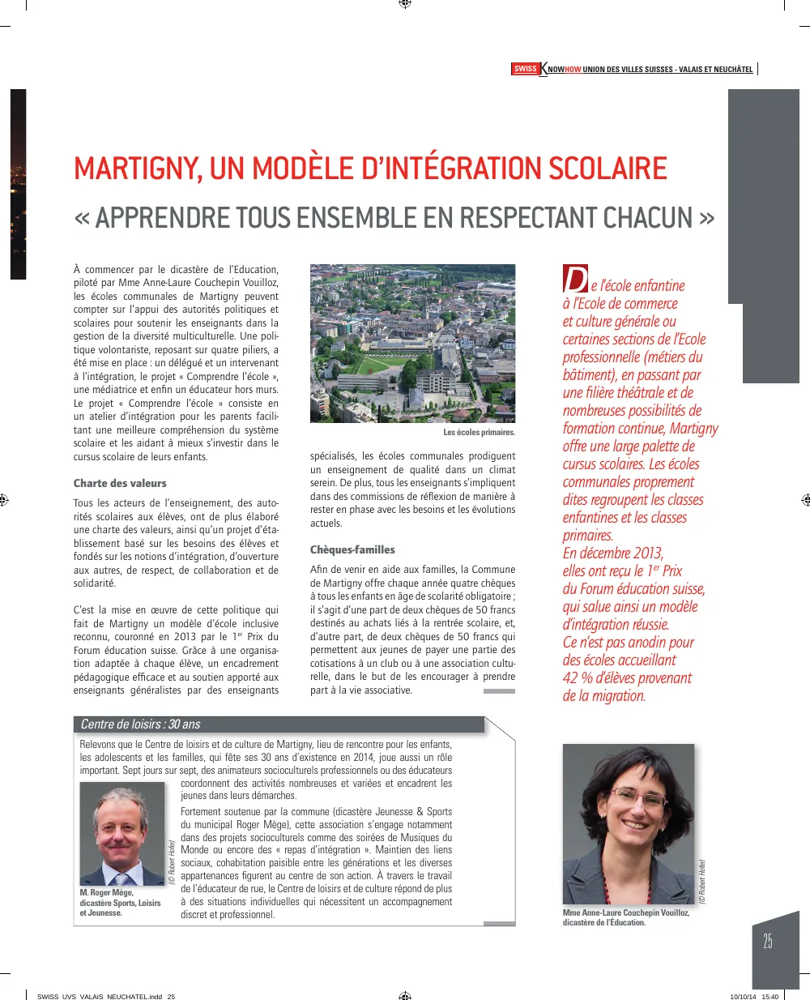
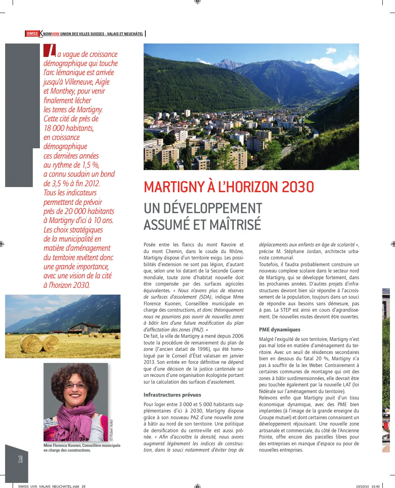
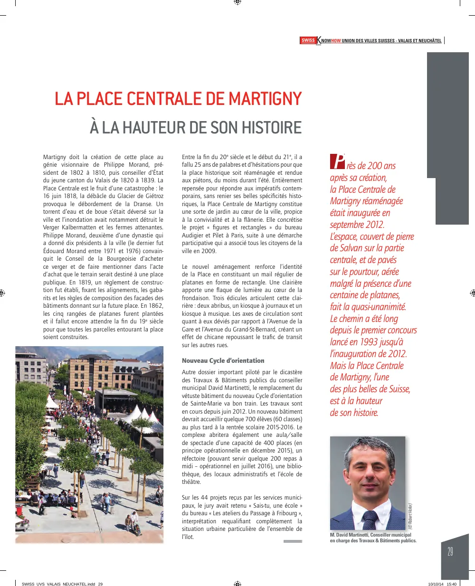

Dossier · Swiss Knowhow – Union des villes suisses : Valais et Neuchâtel (2014)
Martigny, un modèle d'intégration scolaire
De l’école enfantine à l’Ecole de commerce et culture générale ou certaines sections de l’Ecole professionnelle (métiers du bâtiment), en passant par une filière théâtrale et de nombreuses possibilités de formation continue, Martigny offre une large palette de cursus scolaires. Les écoles communales proprement dites regroupent les classes enfantines et les classes primaires. En décembre 2013, elles ont reçu le 1er Prix du Forum éducation suisse, qui salue ainsi un modèle d’intégration réussie. Ce n’est pas anodin pour des écoles accueillant 42 % d’élèves provenant de la migration.
À commencer par le dicastère de l’Education, piloté par Mme Anne-Laure Couchepin Vouilloz, les écoles communales de Martigny peuvent compter sur l’appui des autorités politiques et scolaires pour soutenir les enseignants dans la gestion de la diversité multiculturelle. Une politique volontariste, reposant sur quatre piliers, a été mise en place : un délégué et un intervenant à l’intégration, le projet « Comprendre l’école », une médiatrice et enfin un éducateur hors murs.
Le projet « Comprendre l’école » consiste en un atelier d’intégration pour les parents facilitant une meilleure compréhension du système scolaire et les aidant à mieux s’investir dans le cursus scolaire de leurs enfants.
Charte des valeurs
Tous les acteurs de l’enseignement, des autorités scolaires aux élèves, ont de plus élaboré une charte des valeurs, ainsi qu’un projet d’établissement basé sur les besoins des élèves et fondés sur les notions d’intégration, d’ouverture aux autres, de respect, de collaboration et de solidarité.
C’est la mise en œuvre de cette politique qui fait de Martigny un modèle d’école inclusive reconnu, couronné en 2013 par le 1er Prix du Forum éducation suisse. Grâce à une organisation adaptée à chaque élève, un encadrement pédagogique efficace et au soutien apporté aux enseignants généralistes par des enseignants spécialisés, les écoles communales prodiguent un enseignement de qualité dans un climat serein. De plus, tous les enseignants s’impliquent dans des commissions de réflexion de manière à rester en phase avec les besoins et les évolutions actuels.
Chèques-familles
Afin de venir en aide aux familles, la Commune de Martigny offre chaque année quatre chèques à tous les enfants en âge de scolarité obligatoire ; il s’agit d’une part de deux chèques de 50 francs destinés au achats liés à la rentrée scolaire, et, d’autre part, de deux chèques de 50 francs qui permettent aux jeunes de payer une partie des cotisations à un club ou à une association culturelle, dans le but de les encourager à prendre part à la vie associative.
Relevons que le Centre de loisirs et de culture de Martigny, lieu de rencontre pour les enfants, les adolescents et les familles, qui fête ses 30 ans d’existence en 2014, joue aussi un rôle important. Sept jours sur sept, des animateurs socioculturels professionnels ou des éducateurs coordonnent des activités nombreuses et variées et encadrent les jeunes dans leurs démarches. Fortement soutenue par la commune (dicastère Jeunesse & Sports du municipal Roger Mège), cette association s’engage notamment dans des projets socioculturels comme des soirées de Musiques du Monde ou encore des « repas d’intégration ». Maintien des liens sociaux, cohabitation paisible entre les générations et les diverses appartenances figurent au centre de son action. À travers le travail de l’éducateur de rue, le Centre de loisirs et de culture répond de plus à des situations individuelles qui nécessitent un accompagnement discret et professionnel.
Texte paru dans Swiss Knowhow – Union des villes suisses : Valais et Neuchâtel (2014), p. 25, tel que publié dans l'édition imprimée. En cas d'écart, la version imprimée fait foi.
Photos
Articles
 Interview · texte intégral
Interview · texte intégralMartigny, un état d'esprit
Marc-Henri Favre, dynamique président de la Ville

Dossier · texte intégralMartigny, un modèle d'intégration scolaire
« Apprendre tous ensemble en respectant chacun » – Anne-Laure Couchepin Vouilloz
 Dossier · texte intégral
Dossier · texte intégralLa sécurité civile exige une organisation sans faille
Martigny assume son rôle de chef-lieu – Serge Fellay
 Dossier · texte intégral
Dossier · texte intégralLa Fondation Gianadda, temple des arts plastiques
Martigny au carrefour des arts et du tourisme – Michaël Hugon

Dossier · texte intégralMartigny à l'horizon 2030
Un développement assumé et maîtrisé – Florence Kuonen

Dossier · texte intégralLa Place Centrale de Martigny – À la hauteur de son histoire
David Martinetti, conseiller municipal en charge des Travaux & Bâtiments publics
 Dossier · texte intégral
Dossier · texte intégralMartigny, énergétiquement exemplaire
Une politique cohérente à long terme – René Quiros